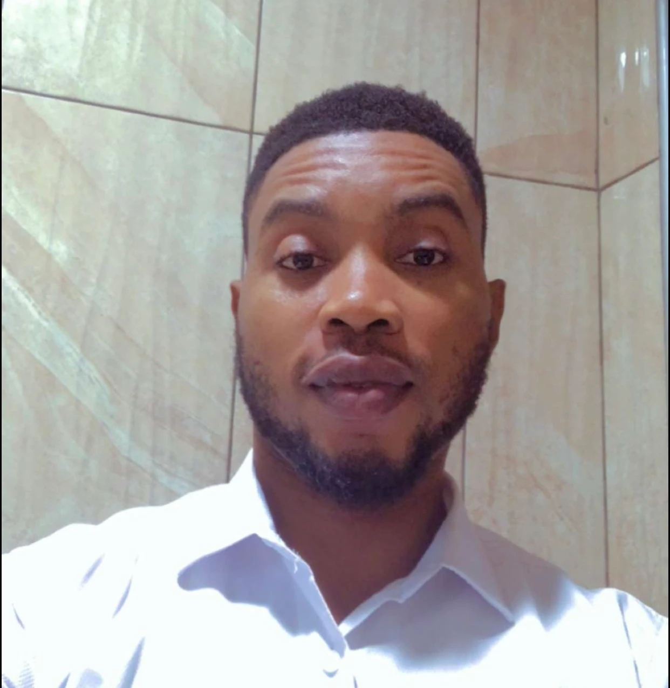

Tosin Adewale | WDD 130

My name is Tosin Adewale. I am a software developer with a strong interest in technology, programming, and data science. I am currently enrolled at BYU, studying Software Development to enhance my skills and gain the knowledge needed to build real-world applications. I enjoy learning new skills, building useful applications, and playing football.